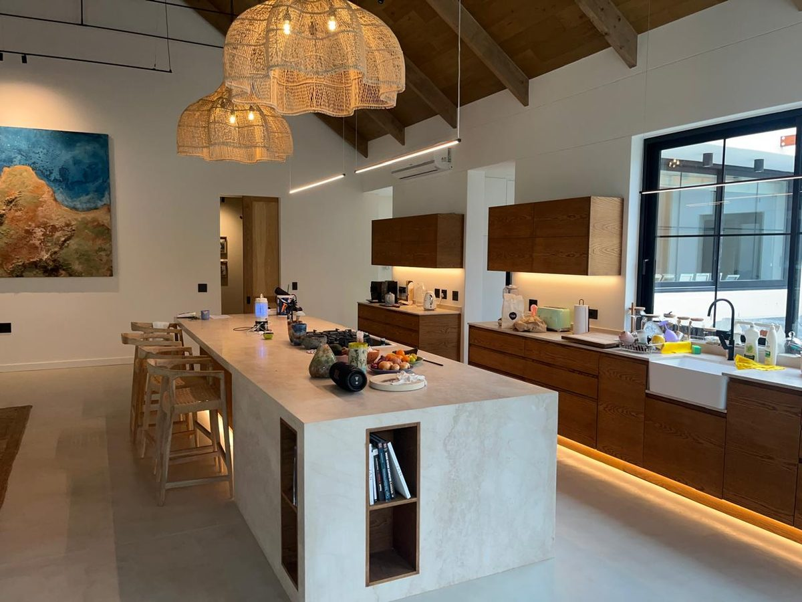

Home extensions, Cape Town
Home extensions in Cape Town
An extension is judged by the join. Where the new roof meets the old one is where most of them fail.
Home extensions, Cape Town
An extension is judged by the join. Where the new roof meets the old one is where most of them fail.
Adding a room is straightforward in principle: foundations, walls, a roof, and a hole in the existing house to connect the two. What decides whether the extension is still sound in ten years is the detailing at the junction, and that is the part that gets rushed.
A new roof tied into an old one needs the flashing to be rebuilt, not sealed. A new slab meeting an old wall needs the damp course to be continuous, or the old wall starts drawing water from the new floor. A new opening in an existing wall needs a lintel of the right size and bearing, and the wall above it supported while the opening is formed.
We build extensions as structural work first and finishes second. Where the City of Cape Town requires plans and approval, we work with your architect or draughtsman, or tell you what needs to be submitted before we start. We would rather delay a start than build something that has to be undone.

From a single extra room to a full-width addition, including the outdoor rooms that Cape Town houses always end up wanting.
New room, wardrobe wall, window and door positions planned around light and privacy.
Living space extended into the garden or into an existing room, with the structural opening formed properly.
Roofed outdoor space that ties into the house and drains away from it.
Floor levels, damp proofing, insulation and services, done so the new room does not feel like a garage.
Structural assessment, stair position and roof rework, planned before anything is lifted.
Flashings, valleys and junctions rebuilt where an addition meets the original roof.
| Factor | Why it moves the number |
|---|---|
| Ground conditions | Slope, rock and old foundations all change the excavation and the foundation design. |
| The junction | A simple lean-to roof against a wall is cheaper than tying a new pitched roof into an existing one. |
| Approvals | Plans, engineer input and council submission add cost and time before the first brick. |
| Services | Extending water, waste, power and drainage to the new room is often underestimated. |
| Finishes | Matching the existing house costs more than making the extension obviously new. |
We quote the structure and the finishes separately, so the cost of the building work is visible before you choose fittings.

Flashings, damp course continuity and movement joints at the tie-in are specified before we start.
Structural changes need City of Cape Town approval. We say so early rather than after demolition.
Foundations, lintels and roof loads confirmed before anyone chooses a tile.
From excavation to the final coat, sequenced by the same person who quoted it.
Start with a free site visit and an honest view of what your extension will involve.
Free — no obligations

Site visit, measured survey and an honest view of what the plot and the existing house will allow.
Working with your draughtsman or architect on submission to the City of Cape Town where required.
Excavation, foundation, slab or suspended floor, walls and the structural opening into the house.
New roof, tie-in to the existing roof, flashings, and the extension closed before finishes begin.
Services connected, plaster, tiling, joinery, paint, and the junction made good on both sides.